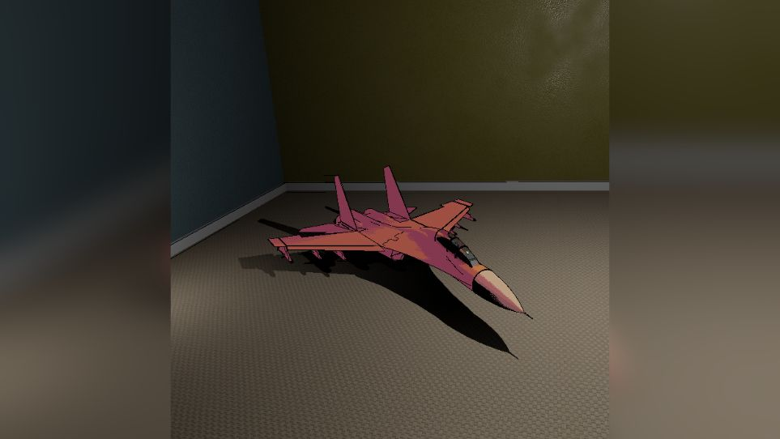
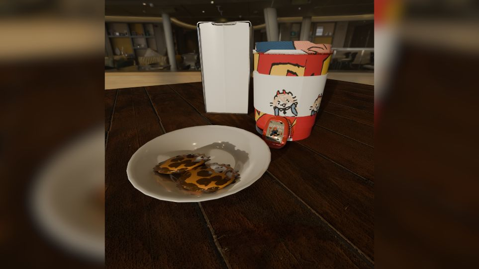
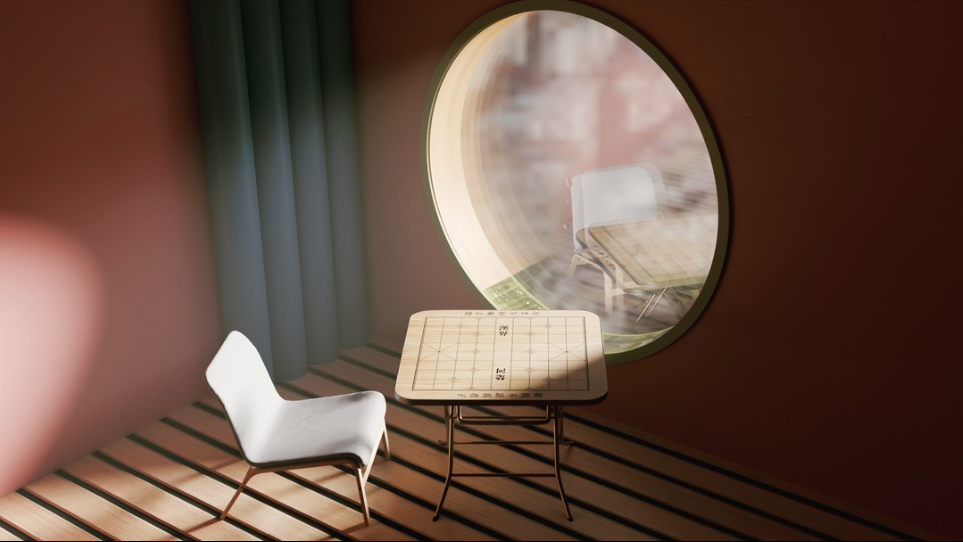

Portafolio

Merkava: Escultura Digital de Batalla
Proyecto de modelado y render 3D que fusiona la robustez de un tanque Merkava con un guiño conceptual a la 'energía'. Se destaca la meticulosa recreación de detalles del modelo y la iluminación fotorrealista, buscando una composición inesperada que genera contraste y narrativa visual.

Publicidad Animada
Video promocional con ritmo y color llamativo.

Composición Abstracta
Formas geométricas y texturas fluidas en equilibrio visual.

Espacio Reflexivo
Render 3D de interior Diseño y renderizado de un ambiente interior con enfoque en luz natural, materiales y reflejos. Se cuidó la composición estética para transmitir tranquilidad y contemplación, usando modelado, texturizado e iluminación para lograr un resultado realista.